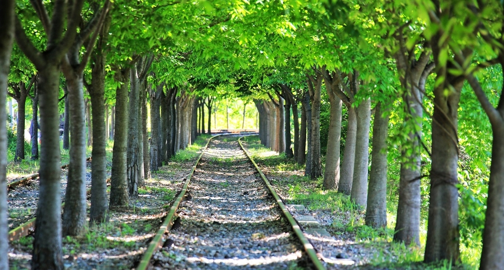
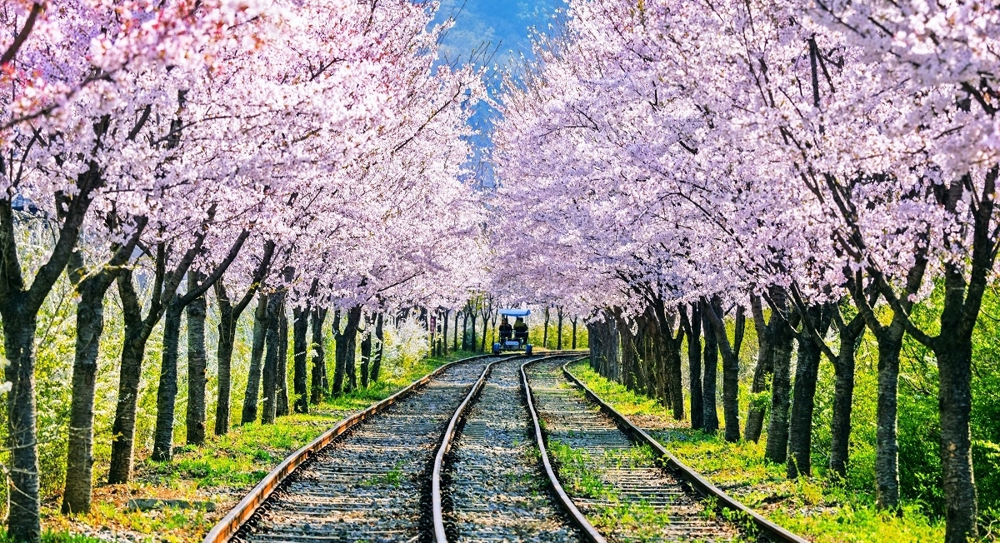
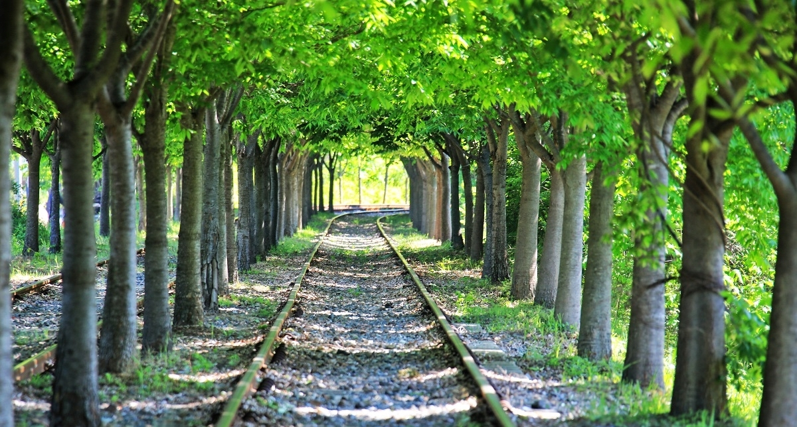
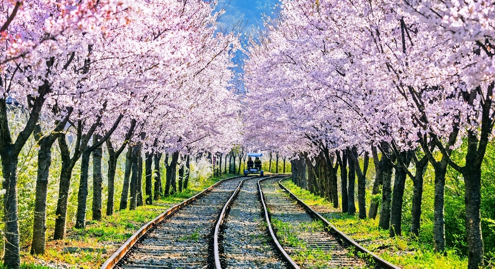

경춘선 복선전철 개통으로 쓸모를 다한 옛 경춘선 철로에 이제는 기차 대신 레일바이크가 달린다. 김유정역 바로 옆에서 출발하는 레일바이크의 탑승장에는 지역적 특색을 살린 대형 책 조형물과 오색 우산 조형물 같은 포토존을 비롯해 카페, 짚와이어 등 소소한 즐길 거리가 많다. 옛 강촌역까지의 8.5km 코스 중 처음 6km 구간은 레일바이크로, 나머지 2.5km 구간은 낭만열차를 타고 이동한다. 레일바이크 구간은 주로 내리막길로 이뤄져 힘들지 않고 산과 들, 강이 어우러지는 목가적인 풍경과 갖가지 테마로 꾸민 터널이 이어진다. 이국적인 분위기의 낭만열차는 북한강을 따라 달리며 탁 트인 전망을 선사한다.
 


